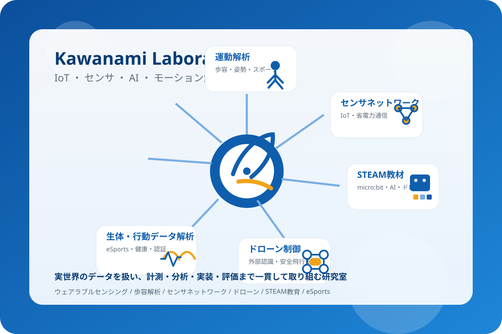
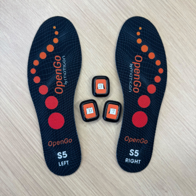
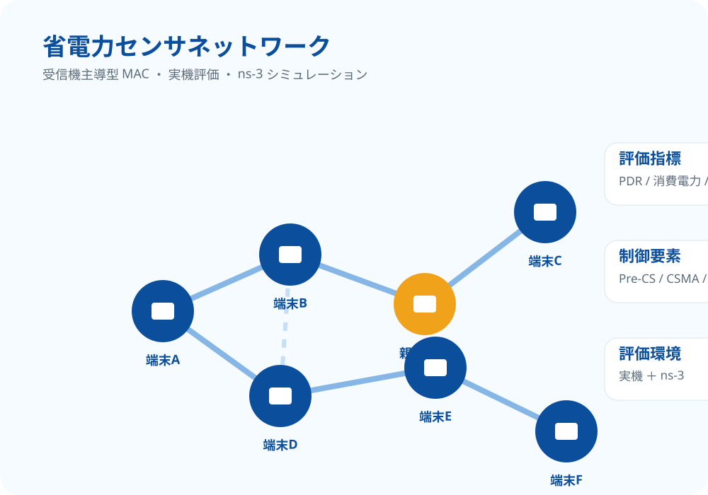
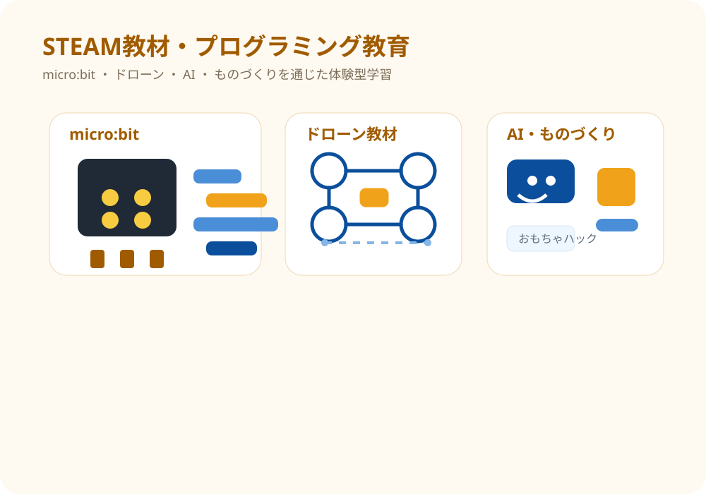
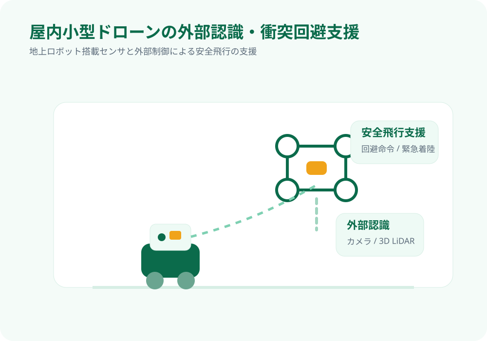
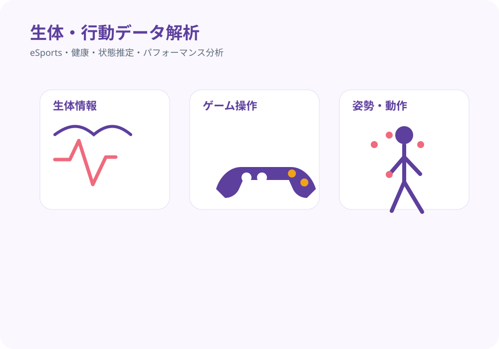
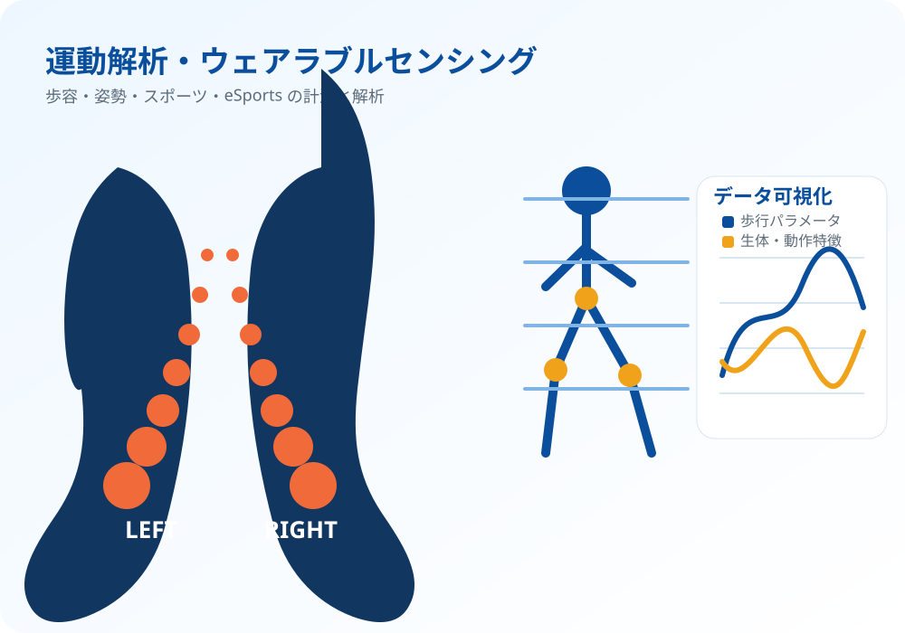

研究の方向性
人の動き、センサから得られる環境情報、教育現場での学びを対象に、 健康支援、個人認証、学習支援、地域課題の解決につながる情報システムを研究しています。
河並研究室では、組込みシステム、IoT、センサネットワーク、AIを基盤として、 人の行動や環境を計測・解析し、健康、教育、地域社会に役立つ情報システムの研究開発に取り組んでいます。 卒業研究を入口に、大学院で研究を成果へ育てることも歓迎しています。

センサでデータを取得し、AIや情報処理で分析し、システムとして実装し、実世界での活用まで見据える。 この流れを大切にして研究テーマを設計しています。
人の動き、センサから得られる環境情報、教育現場での学びを対象に、 健康支援、個人認証、学習支援、地域課題の解決につながる情報システムを研究しています。
プログラミング、センサ計測、データ分析、AIの活用、実験設計、論文・発表まで、 自分のテーマを深めながら幅広い技術に触れることができます。
IoT、センサ、AI、ネットワーク、教育技術を組み合わせ、実世界の課題に向き合う情報システムを研究しています。

インソール型センサ、IMU、モーションキャプチャ、生体センサを用いて、 歩容解析、フォーム比較、スポーツ応用、eSportsの選手トレーニングやチーム分析に取り組みます。

長期的な環境計測に必要な低消費電力無線センサネットワークを対象に、 実機検証とns-3シミュレーションを組み合わせて評価します。

micro:bit、ドローン、AI、ものづくりを活用し、体験を通じて学べるプログラミング教材を開発します。

GPSを利用できない屋内小型ドローンを対象に、外部センサを用いた認識・追跡・安全飛行支援を研究します。

操作ログ、生体情報、姿勢、反応時間などを計測し、プレイヤーや利用者の状態やパフォーマンスを分析します。

歩容データを用いた個人認証、歩行環境を考慮した異常歩行・疲労状態の推定などに取り組みます。
単にプログラムを書くのではなく、データを取り、分析し、評価し、成果として伝えるところまで経験します。
Python、機械学習、データ処理、シミュレーションなどをテーマに応じて扱います。
インソール型センサやモーションキャプチャなどを用いて、人の動きを計測・評価します。
ウェアラブルセンサ、無線通信、センサネットワークなどの計測系に触れられます。
取得したデータを可視化し、機械学習や統計処理を通して意味のある情報へ変換します。
研究として成立するように、実験条件を設計し、性能や妥当性を評価する力を養います。
卒業研究のまとめだけでなく、学会発表や論文執筆まで発展するテーマもあります。
卒業研究は研究の入口です。大学院では、見つけた課題をさらに深め、実装・実験・評価・発表を重ねることで、 研究を成果として形にしていきます。
テーマを決め、実装や実験を行い、データを分析して、研究としてまとめる基本的な流れを経験します。
長期データ、条件比較、追加実験、評価指標の設計などに取り組み、研究の独自性を高めます。
学会発表、論文投稿、公開リポジトリ、教育・地域連携などを通して、研究成果を社会に発信します。
実験を設計する力、データを分析する力、システムを作り切る力、成果を文章や発表で伝える力は、 開発職、AI、IoT、データ分析、教育DXなど、さまざまな分野で役立ちます。
歩容解析なら長期データや歩行環境へ、センサネットワークなら実機とシミュレーションの統合評価へ、 STEAM教材なら教育効果や学習行動の評価へ発展できます。
ニュースをすべて並べるのではなく、学生が成果を出せる研究室であることが伝わる代表例を掲載しています。
Murata, T., Sakamoto, S., Kawanami, T., Sensors, 26(1), 164, 2026.
Fukamachi, K., Yamamoto, T., Sato, S., Kawanami, T., Sensors and Materials, 2026.
Nakagawa, J., Sato, S., Kawanami, T., Journal of Global Tourism Research, 2025.
GitHub Pages版では、研究室の活動を外に見せることを重視します。 公開できるコード、教材、研究資料は、学生の成果を示すポートフォリオにもなります。
受信機主導型MACプロトコルの評価に関するns-3実装・評価基盤。 再現可能な研究成果として公開できます。
micro:bitと小型ドローンを活用したプログラミング教材、競技ルール、教育実践の記録を整理して公開できます。
scikit-learn、MediaPipe、センサデータ解析など、研究室内外で使える教材として展開できます。
研究テーマ、配属、大学院進学、共同研究、教育活動に関心がある場合は、まずは気軽に相談してください。
〒921-8501 石川県野々市市扇が丘7-1
金沢工業大学 扇が丘キャンパス 31号館3階
居室：31号館310室 / 研究室：31号館307室
このページはGitHub Pagesで公開することを想定しています。 研究室の活動・教材・公開プロジェクトを継続的に更新できます。